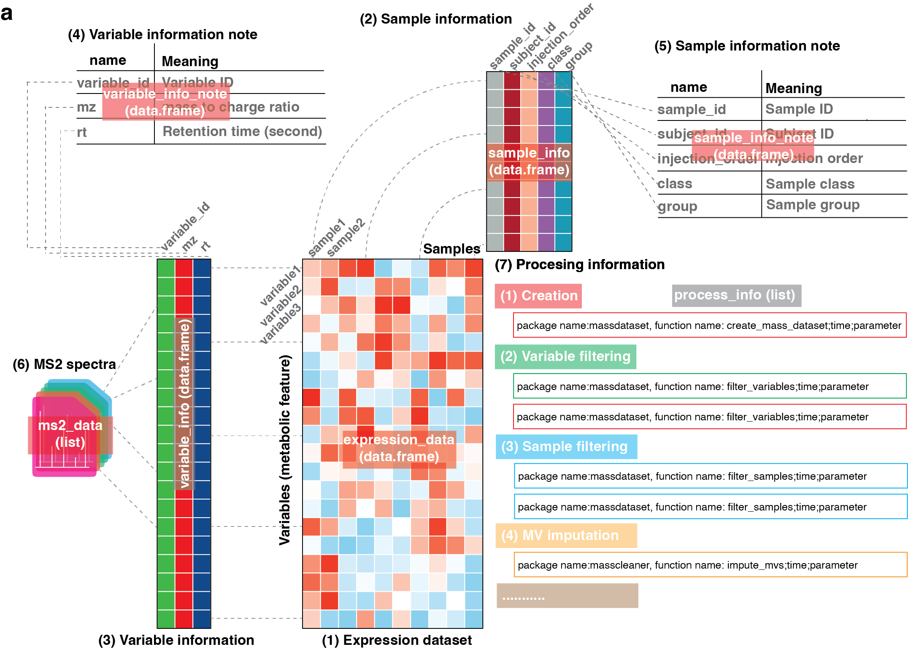

About
massdataset provides the mass_dataset class for organizing rectangular small-molecule profiling datasets in a consistent structure. It also provides core utilities for creating, accessing, combining, summarizing, and converting mass_dataset objects across the broader tidymass ecosystem.

massdataset is designed as an infrastructure package. It helps you keep imported datasets in a unified format before downstream analysis and makes it easier to move between different tidymass tools without rewriting data containers.
Installation
You can install the development version of massdataset from GitHub.
if(!require(remotes)){
install.packages("remotes")
}
remotes::install_github("tidymass/massdataset")Additional installation details are available here.
Need help?
If you have questions about massdataset, contact me by email or through the channels below.
WeChat: shenxt1990